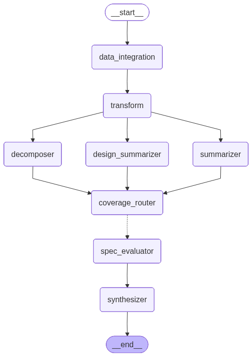

Test Suite Reviewer (RTM)
What it checks & how
The Test Suite Reviewer answers one regulatory question for a single
requirement: does the traced test suite adequately cover this
requirement? It is the Requirements-Traceability-Matrix (RTM) lens used in
FDA / IEC 62304 design verification reviews. The graph runs as a binary
classifier, emitting an SoP-gating rubric (M1–M5) plus one advisory dimension
(R6) and a single Yes/No overall_verdict.
It makes its assessment in three movements:
- Decompose the requirement into atomic, individually testable specifications, and summarize each traced test case (and any design documents) into a compact, comparable form.
- Evaluate coverage of every decomposed spec in parallel — one LLM call per spec — scoring whether the summarized test suite exercises it.
- Synthesize the per-spec verdicts into one holistic assessment (a Mixture-of-Agents-style reduction) that produces the M1–M5 + R6 findings, comments, and clarification questions.
Inputs required
The graph state is RTMReviewState
test_suite_reviewer/core.py. A run needs, per requirement:
| Field | Type | Required | Meaning |
|---|---|---|---|
requirement | Requirement (req_id + text) | Yes | The single requirement under review; req_id is the cache partition. |
test_cases | List[TestCase] | Yes | Test cases traced to the requirement (id, description, setup, steps, expected results). |
design_docs | List[DesignDocument] | Optional | Design docs implementing the requirement; enables the R6 design-alignment lens. |
cache_mode | "off" | "partial" | "full" | Optional | Per-run cache behaviour; defaults to partial. |
Via the API, these arrive from a JAMA baseline: the data_integration
node fetches the baseline and transform maps each requirement + its
traced test cases into one RTMReviewState. In tests the state is supplied
directly and both nodes are no-ops.
Graph topology

RTMReviewerRunnable graph (rendered from the live pipeline).START
-> data_integration (JAMA fetch, or no-op when data already in state)
-> transform (JAMA rows -> graph state)
-> [ decomposer | summarizer | design_summarizer ] (parallel)
-> coverage_router (join barrier)
-> dispatch_coverage --Send xN--> spec_evaluator (parallel, one per spec)
-> synthesizer (reduces coverage_analysis via operator.add)
-> ENDDecomposer, summarizer and design_summarizer run concurrently; all three land
on coverage_router (a no-op join) before dispatch_coverage
fans out one Send per decomposed spec. The per-spec verdicts
accumulate into coverage_analysis via an
Annotated[List[EvaluatedSpec], operator.add] reducer, which the
synthesizer then reduces. test_suite_reviewer/pipeline.py
Nodes & prompts
| Node | Class | Prompt role | Does | Output |
|---|---|---|---|---|
data_integration | DataIntegrationNode | — | Conditional JAMA fetch (via PyJama) vs. local pass-through. | jama_data or no-op |
transform | transform fn | — | Maps JAMA rows → state (no-op in local mode). | state fields |
decomposer | DecomposerNode | decomposer | Splits the requirement into atomic, testable specs. v6 (edge-case set) adds boundary/concurrency/state-mode/degenerate-input decomposition. | DecomposedRequirement |
summarizer | SummaryNode (Batched) | summarizer | Condenses each test case to objective / protocol / acceptance-criteria; batched in parallel. | TestSuite |
design_summarizer | DesignSummarizerNode (Batched) | design_summarizer | Summarizes design docs (verification hooks, key components); skips when none. | SummarizedDesignSpec[] |
coverage_router | lambda | — | Join barrier so the conditional fan-out has a single named source. | — |
spec_evaluator | SingleSpecEvaluatorNode | coverage | Scores coverage of one spec against the summarized suite; runs N× in parallel via Send. | EvaluatedSpec (accumulated) |
synthesizer | SynthesizerNode (final) | synthesizer | MoA-style reduction of all per-spec verdicts into the M1–M5 + R6 rubric. is_final_output=True. | SynthesizedAssessment |
Rubric — M1–M5 (mandatory) + R6 (advisory)
| Code | Dimension | Verdict | Checks / N-A rule |
|---|---|---|---|
| M1 | Functional coverage | Yes / No | The requirement's positive behaviour is covered by ≥1 test case. |
| M2 | Negative coverage | Yes / No / N-A | Error/invalid-input handling is tested. N-A when the requirement has no validation surface. |
| M3 | Boundary coverage | Yes / No / N-A | Limits/thresholds are tested. N-A when the requirement has no threshold/limit surface. |
| M4 | Spec coverage | Yes / No | Every decomposed spec is covered by the suite. |
| M5 | Terminology alignment | Yes / No | Test vocabulary aligns with the requirement text. |
| R6 | Design alignment (advisory) | Yes / No / N-A | Design docs implement the requirement. N-A when no design docs exist. Does not gate the verdict. |
Verdict logic
The synthesizer returns exactly six MandatoryFinding items (M1–M5 +
R6). overall_verdict is Yes iff every mandatory finding
(M1–M5) is in {Yes, N-A}; R6 is advisory and never flips the verdict.
The assessment also carries up-to-two-sentence comments and targeted
clarification_questions. test_suite_reviewer/core.py
Caching & prompt sets
Every interim node opts into the shared 3-tier ReviewCacheManager
(Redis + disk), partitioned by req_id. Under partial (the
default), interim nodes are cached but the final synthesizer always re-runs for a
fresh assessment.
include_edge_case_analysis selects the prompt set:
test_suite_reviewer_v4 (edge-case decomposer v6) when ON,
test_suite_reviewer_v3 (baseline decomposer v5) when OFF. The two
sets share the same version for every other node, so the prompt-set name is
folded into the cache key
(review:{req_id}:{set}:{node}:{version}, disk
{cache_dir}/{req_id}/{set}/{node}_{version}.json) to keep their results
from aliasing. Each set is pre-compiled into its own graph at startup and selected
per request.Output
The endpoint returns a self-contained HTML FileResponse (viewer)
rendered from outputs.jsonl, one record per requirement, showing the
M1–M5 + R6 rubric, the decomposed specs, and the inlined test cases.